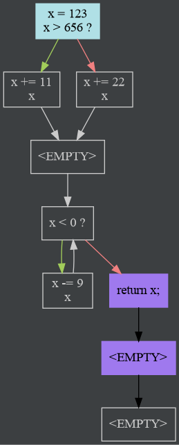
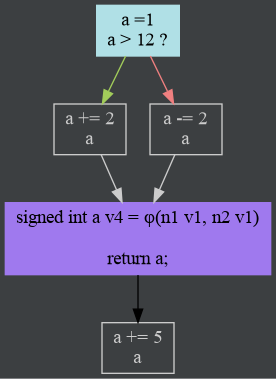

SSA Form
The CFG class is also responsible for converting the code in its nodes to a (pruned) SSA form.
However, the process has a few prerequisites:
The CFG must be cleaned of certain artifacts created during AST graphing. In particular, empty blocks (blocks with no code, no condition and no return) are removed from the graph.
Here is an example of a CFG that has not been cleaned:
All the blocks labeled
<EMPTY>are redundant.The edges are collapsed such that the control flow the graph represents is unchanged. This is done in a loop until no more collapsing can be done; removing an empty block may also allow us to remove a previously un-removable block (this case is in the example above, with the two blocks that come after the return).
See
collapseEmptyBlocksin ControlFlowGraph.kt, andBasicBlock.collapseEmptyPredsin BasicBlock.kt.Dead code elimination is performed, by finding subgraphs disconnected from the start node. See
filterReachablein ControlFlowGraph.kt.Note that in this case, impossible edges aren’t considered for connectivity. For example, a basic block that contains a function return has an impossible edge to another basic block, which contains the code after the return. Strictly speaking, the second block is connected. For DCE purposes, however, such blocks are considered disconnected. Such a graph looks like this:
Unterminated
BasicBlockare identified. Warnings are reported for non-void functions (it means control flow reached the end of the function and didn’t find a return). The blocks are terminated with anImpossibleJump.We precompute a list of the CFG’s nodes in post-order (basically DFS, for the kinds of graphs encountered here). See
postOrderNodesin ControlFlowGraph.kt.An auxiliary data structure,
DominatorList, is created. This list stores each node’s immediate dominator. The list is then used to compute every node’s dominance frontier, which is stored as a member ofBasicBlock.
Once all these steps are complete, SSA conversion can begin. It works in 2 phases: φ-function insertion, and variable renaming.
The first phase is responsible for taking every single variable definition in
the function, and creating PhiInstruction instances for every control flow
intersection (this is what the dominance frontier is used for).
This is a relatively uncomplicated process if dominance is precomputed.
See insertPhiFunctions in ControlFlowGraph.kt.
The second phase does the bulk of the work: renaming every use and definition of every variable.
A lot of state is tracked to enable this process (see the ReachingDefinition and VariableRenamer classes in
ControlFlowGraph.kt).
The “renaming” is done by simply annotating variables with a “version” property.
“Newer” versions’ definitions are strictly dominated by “older” versions’ definitions.
Once this work is completed, the code is now in SSA form.
If the ControlFlowVariableRenames marker in log4j2.xml is enabled (it is denied logging by default), the variable
renamer will print a table outlining the steps done during renaming for the variable x:
[TRACE] in ControlFlow: BB| x mention | x.reachingDef
[TRACE] in ControlFlow: -------------------------------
[TRACE] in ControlFlow: 1 | x0 φuse | ⊥ updated into ⊥
[TRACE] in ControlFlow: 1 | def x1 | ⊥ then x1
[TRACE] in ControlFlow: 1 | x1 use | x1 updated into ⊥
[TRACE] in ControlFlow: 3 | def x2 | x1 then x2
[TRACE] in ControlFlow: 3 | x2 use | x2 updated into x1
[TRACE] in ControlFlow: 9 | x2 φuse | x2 updated into x1
[TRACE] in ControlFlow: 4 | x1 use | x2 updated into ⊥
[TRACE] in ControlFlow: 4 | def x3 | x1 then x3
[TRACE] in ControlFlow: 4 | x3 use | x3 updated into x1
[TRACE] in ControlFlow: 4 | x3 use | x3 updated into x1
[TRACE] in ControlFlow: 2 | x3 φuse | x3 updated into x1
[TRACE] in ControlFlow: 9 | x3 φuse | x3 updated into x1
[TRACE] in ControlFlow: 9 | def x4 | x3 then x4
[TRACE] in ControlFlow: 9 | x4 use | x4 updated into x3
[TRACE] in ControlFlow: 9 | def x5 | x4 then x5
[TRACE] in ControlFlow: 9 | x5 use | x5 updated into x4
[TRACE] in ControlFlow: 9 | x5 use | x5 updated into x4
[TRACE] in ControlFlow: 1 | x5 φuse | x5 updated into x4
[TRACE] in ControlFlow: 2 | x5 φuse | x5 updated into x4
[TRACE] in ControlFlow: 2 | def x6 | x5 then x6
[TRACE] in ControlFlow: 2 | x6 use | x6 updated into x5
(timestamps omitted for brevity)